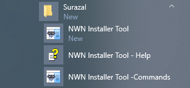

If you enabled Include program items in your Start Menu when you ran the Setup program, your Windows Start Menu should contain these Installer Tool items under the Surazal folder...

Sometimes after installing or updating the Installer Tool, there are only two entries shown in the Windows Start Menu.
This seems to be a consistent problem in Windows 10 and an occasional one in Window 8.1 and can be corrected by Restarting Windows.
If you are not running Windows 10 Version 10.0.10586 Build 10586 (from System Information) or higher, you need to Sign out and in twice...
Hopefully Microsoft will fix this problem in the near future.